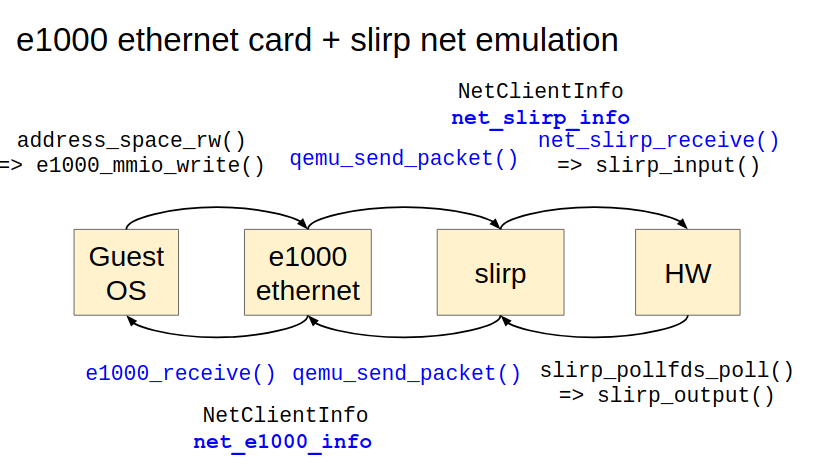

QEMU Network¶
introduction(architecture)¶
virtual network device 跟 network emulation 的程式碼會各實作出一個 NetClientState, 然後兩者互相 peering.
當兩者要傳出資料給對方時, 都會呼叫 qemu_send_packet*() 相關的 API 來完成.
qemu_send_packet*() 則會呼叫 peer 的 NetClientState 之中的 NetClientInfo->receive*() 相關 API 來接收對方給的資料.
所以每套 virtual network device 跟 network emulation 都需要提供 NetClientInfo 的介面,
virtual network device 的
NetClientInfo->receive*()實作 QEMU 如何把資料傳回 guest OS driver.network emulation 的
NetClientInfo->receive*()實作 QEMU 如何把資料透過 host OS 的 APIs 送出到 remote OS.
舉例來說, 以下是一個 guest OS sending packet 的範例, 使用 e1000-slirp 的網路設定. sending packets 的 control flow (QEMU part):
VM Exit => address_space_rw()
=> e1000_mmio_write() => start_xmit() => ... => e1000_send_packet()
=> qemu_send_packet()
=> net_slirp_receive() => slirp_input() => ip_input() => tcp_input() ... => send() syscall
第一行是 QEMU 接受 guest 的 MMIO exit 並轉交給 e1000 網卡 emulation 的邏輯, 這邊不詳述.
第二行是 e1000 程式碼的實作, 可以發現 e1000 最後透過 qemu_send_packet*() 送出封包給 network emulation 的部份做模擬.
第四行則轉接到 slirp 所提供的 NetClientInfo->receive() API, 可以看到 API 開始透過 slirp 的 tcp/ip stack 來 decapsulate 封包, 最後把資料透過 system call [1] 送出.
以下是架構參考圖:
p.s.
關於
qemu_send_packet()如何呼叫NetClientInfo->receive(), 請參考 qemu_send_packet() 跟 NetClientInfo
qemu_send_packet() 跟 NetClientInfo¶
basic struct¶
overview:
- struct NetClientState
- NetClientInfo* info
- NetClientState* peer
- NetQueue *incoming_queue
- QTAILQ_ENTRY(NetClientState) next
NetQueue methods:
- methods
- qemu_net_queue_append(): 從 parameter 把要 sending 的資料暫存到 queue->packets
- qemu_net_queue_flush(): 把所有 queue->packets 的資料都進行 qemu_net_queue_deliver()
- qemu_net_queue_deliver(): 呼叫該 NetQueue 的 deliver method: queue->deliver()
- qemu_net_queue_send(): 進行 qemu_net_queue_deliver + flush, 如果 deliver 失敗則改成 append
- member
- QTAILQ_HEAD(packets, NetPacket) packets
- NetQueueDeliverFunc *deliver
qemu_send_packet() calls peer NetClientInfo’s receive functions
qemu_send_packet(NetClientState* nc)
// => qemu_net_queue_send(nc->peer->imcoming_queue)
=> nc->peer->incoming_queue->deliver(nc, ..., nc->peer->incoming_queue->opaque) = qemu_deliver_packet_iov()
// peer = nc->peer->incoming_queue->opaque ??
[1.] peer->info->receive_iov(peer, iov, iovcnt);
[2.] nc_sendv_compat(peer, iov, iovcnt, flags);
[a.] peer->info->receive()
[b.] peer->info->receive_raw()